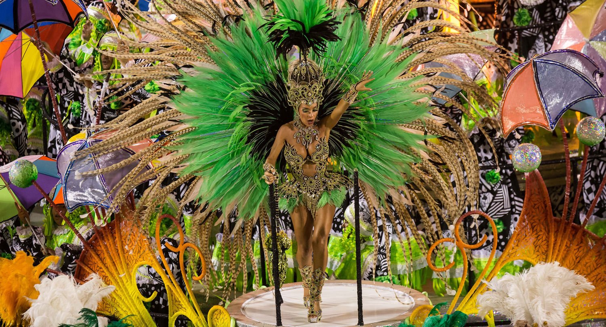

Brazilian culture, a blend of indigenous, European, African, and immigrant influences, is known for Carnival, samba, football, and a rich tapestry of music, dance, and cuisine, making it a lively and dynamic representation of Brazil's diverse and colorful identity.
